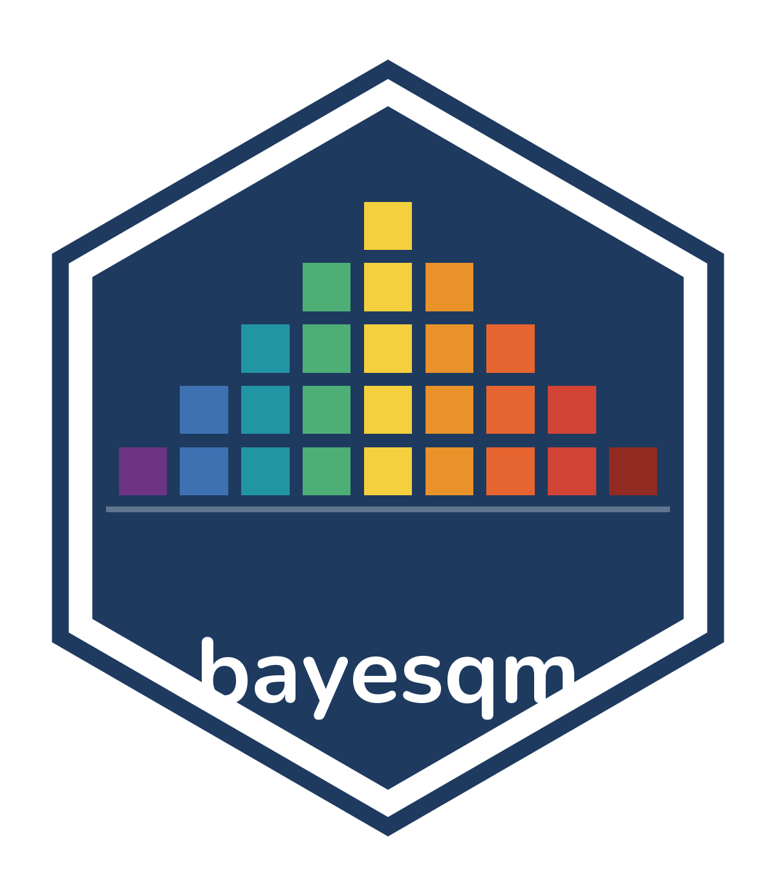

Rename factors consistently across a bayesqm_fit
Source:R/rename_factors.R
rename_factors.RdReplaces the default f1..fK factor labels everywhere they appear on
the fit: posterior-mean and credible-interval loading matrices, the
factor-score matrices, the factor-characteristics table, the
correlation matrix, the flagged matrix, the distinguishing /
consensus table column names, and the factor dimension of the raw
Lambda_draws / F_draws arrays.